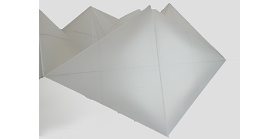

-
5,120 Etiam
-
8,192 Magna
-
2,048 Tempus
-
4,096 Aliquam
-
1,024 Nullam
Violência doméstica Psicológia é o conceito deste projecto ao qual quis transportar para a escultura e para as pedras que tenho na "minha mão". A sensação e os sentimentos envolvidos como a dor, o sofrimento ou até mesmo a angústia presentes na vítima, sendo que a vítima é a mulher representada na tatuagem, o que se pressupõe que na maior parte das vezes a mulher é o elemento fraco que recebe todos esses maus tratos. Esses maus tratos referidos não é o teor físico mas sim o psicológico (conceito principal) e esse é bastante problemático, mais grave até que o físico, destrói mais a vítima. Nesse sentido, dou a entender uma história com um início belo, como sempre existe, até a um fim, que leva a abominação do que era belo no começo..
Materiais
O Caleidociclo como instrumento de quebra-cabeças é inspiração para um candeeiro, com a mesma forma, linear e sem qualquer padrão. com um design simples é o candeeiro ideal para uma mesa de cabeceira, ou uma cómoda, ou uma outra mesa.

Vídeo
O passado, uma menina/criança que abre os olhos muito lentamente.
Passa por uma memória de uma rapariga de quando era pequenina e andava de trenó pela neve. Descia pelas montanhas cobertas de branco. O sonho continua com a entrada de outra personagem, também a abrir os olhos lentamente. É uma outra rapariga, que representa a menina já crescida, com uma outra maturidade mas com o mesmo sonho. A rapariga sonha pensativa naquele momento da sua infância.